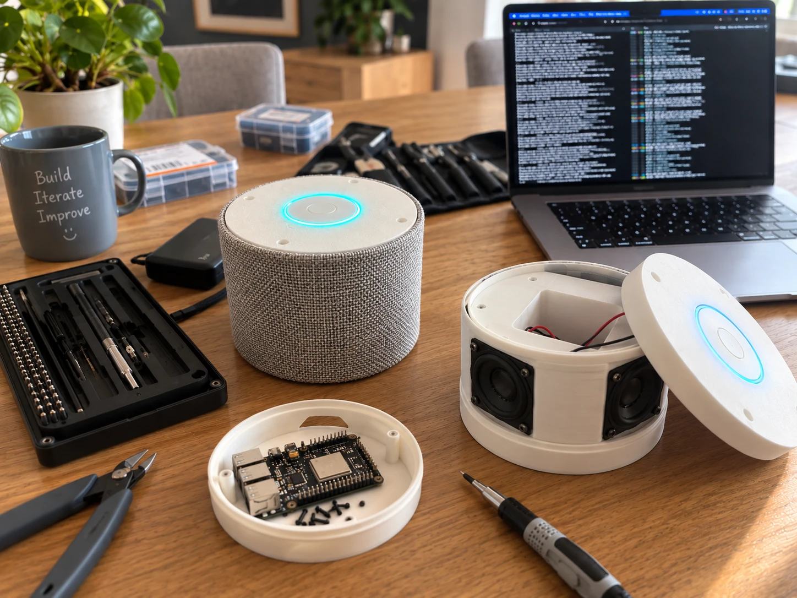

Babbl sits on a table or shelf at home. You say “hoi babbl” and ask whatever you want to know or get sorted. No menus, no screen.

The light ring comes on: Babbl is listening. Before that, Babbl isn’t listening in.
The way you’d ask a person. “When is my dentist appointment?” or “What does this letter say?”
An answer, a reminder, an explanation. If it’s something that matters, such as sharing something with someone, Babbl asks you first whether that’s all right.
If someone in your circle has something for you, Babbl glows a soft green. Press the button when you want to hear it. Babbl never starts talking on its own.
“I’ve got a hairdresser’s appointment on Friday.” Or: “Remind me tomorrow about Els’s birthday.”
Take a photo with the Babbl app. The letter is read on your phone; Babbl explains what it says.
“Put milk on my list.” If you like, someone in your circle can see it too.
“Let my daughter know I’d like to speak to her.”
“Someone from the bank is asking for my PIN. Is that allowed?” Ask before you do anything. Babbl tells you honestly what it thinks. More about scams
“Any post?” Babbl tells you who it’s from, what’s important and what can’t be trusted. Babbl reads any reply back to you first.
Babbl itself is for talking to. The Babbl app is there for the moments when a screen is handier:
Everyone uses the same app, in a simple or a detailed view.
The first Babbls are on our workbench. The final device will be a little lower, with the same shape:
Understanding Dutch speech happens on servers we manage ourselves, in the EU. Without internet, Babbl says so out loud, and can’t help you at that moment. Babbl is not an alarm system.
Soon Babbl will also be able to help you find your way to services in your area, such as a village car scheme or a grocery delivery service. Always with you as the starting point, and never because someone has paid for it.
We’re looking for people who’d like to use Babbl and tell us what works. Leave your details; we’ll get in touch as soon as there’s a place.